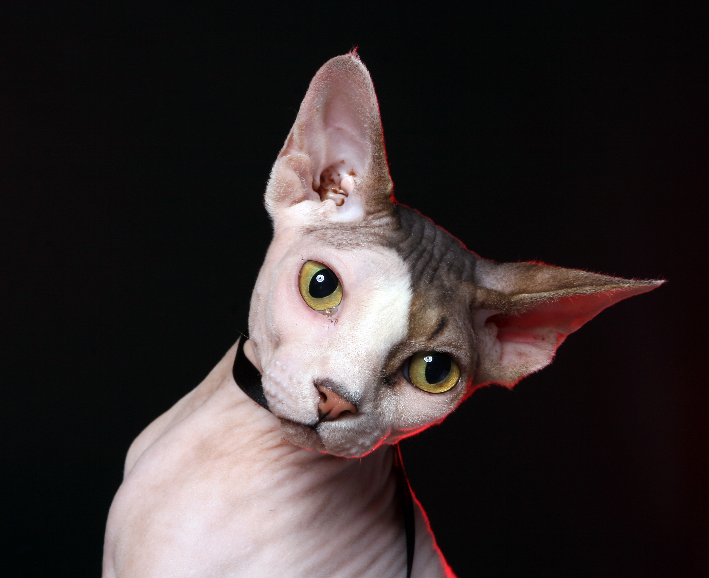

Em um puff amarelo macio, um gato preto e branco repousa com total indiferença ao mundo exterior. Seu corpo
elegante se adapta perfeitamente à curvatura do puff, criando uma imagem de conforto e relaxamento absoluto.
Seus olhos estão meio fechados, demonstrando um estado de contentamento supremo. A combinação de sua pelagem
distintiva com o puff amarelo cria uma cena de contraste agradável, como se a calma do gato estivesse em
harmonia com o ambiente aconchegante.

Uma foto cativante de um gato sem pelos, em um fundo preto com luzes vermelhas de sombra, evoca uma atmosfera
única. A ausência de pelo revela a delicadeza de sua pele e sua figura esguia. As luzes vermelhas lançam
sombras intrigantes ao redor do gato, destacando sua beleza singular. É uma imagem que combina a
vulnerabilidade do gato sem pelos com um toque de sensualidade e mistério, criando uma composição
visualmente intrigante que convida a contemplação.
Um gato preto e branco com óculos escuros é uma visão intrigante. Seu pelo é uma mistura perfeita de
contrastes, com o branco destacando-se de forma dramática contra o negro profundo. Os óculos escuros
adicionam um toque de mistério à sua aparência, dando-lhe um ar de sofisticação felina. Seus olhos espreitam
por trás das lentes escuras, revelando um olhar astuto e curioso que cativa quem o observa. É como se ele
estivesse pronto para embarcar em uma aventura noturna, pronto para explorar o mundo à sua volta.